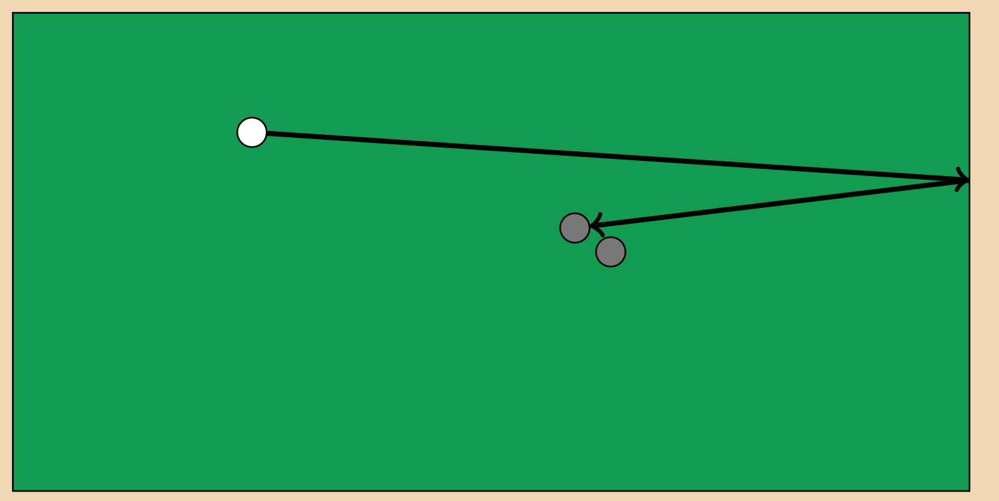
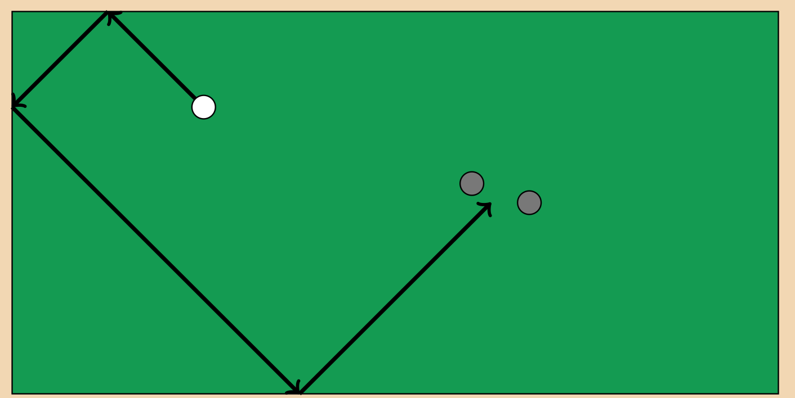
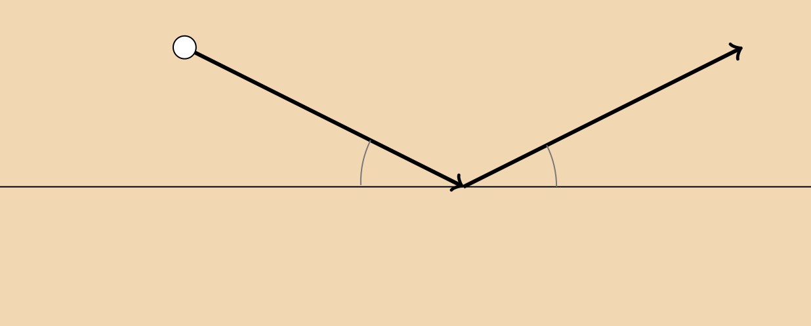
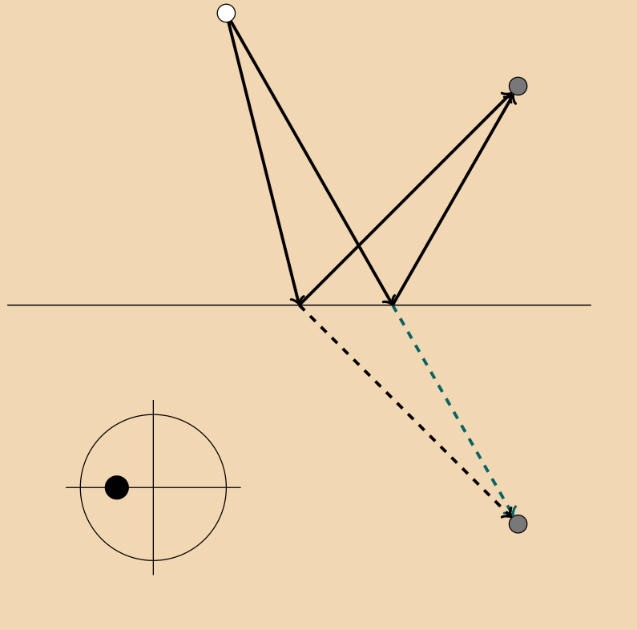
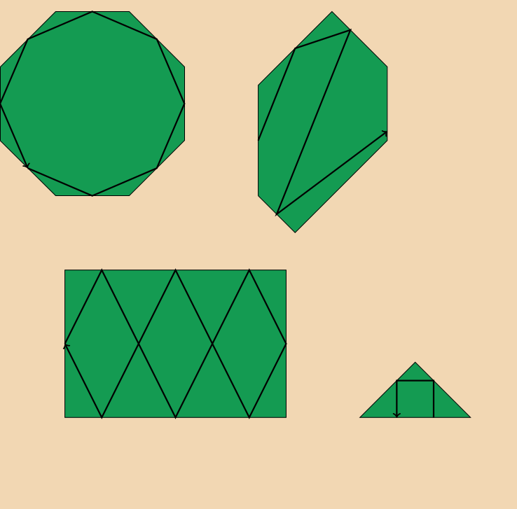
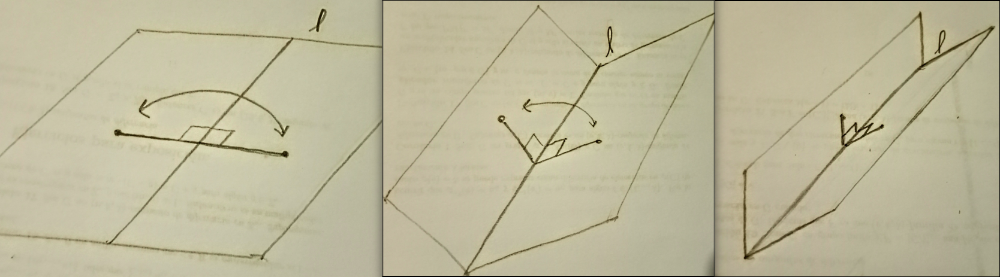
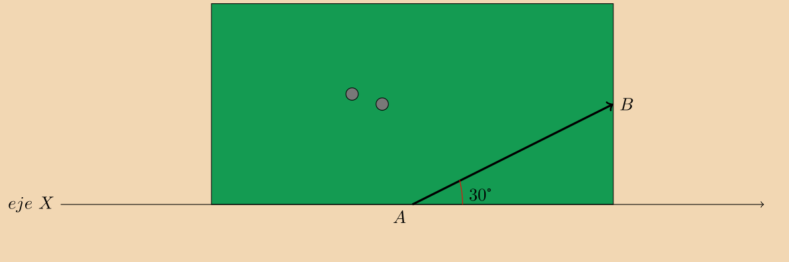
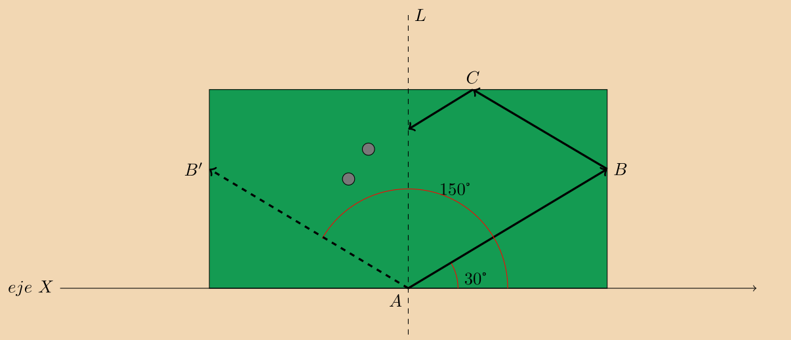

¡Carambolas!
Cada vez que alguien se entera que me gustaba jugar al billar, su primer comentario suele ser: Claro, estudiaste matemáticas. Mi respuesta siempre es: Sí, pero no por eso lo juego bien.
Lo cierto es que hay un estrecho vínculo entre el juego del billar y las matemáticas. En particular con lo que tiene que ver con los ángulos en las figuras geométricas y especialmente con el juego de carambola.
Comencemos entonces explicando cuáles son las reglas para jugar a la carambola. El juego se desarrolla sobre una mesa de billar la cual tiene proporción 2 a 1 respecto a su largo y ancho. Está recubierta de una tela o paño para asegurar el óptimo deslizamiento de las bolas. En este juego hay 3 de ellas y a diferencia del pool, no hay que introducirlas en ninguna tronera. A grandes rasgos, el objetivo del juego consiste en que, golpeando una de las bolas con un taco, a la que llamamos bola objetivo, esta logre el contacto con las dos restantes. Podemos agregar reglas adicionales que hacen el juego más complicado, aumentando el grado de dificultad.

Entre las reglas mas usuales está la de la carambola de tres bandas. Al ser la mesa un rectángulo, esta cuenta con 4 lados, llamados bandas. Cabe mencionar que las bandas están cubiertas con caucho para que cuando las bolas las impacten, estas no disminuyan su velocidad.
Bueno, para jugar la carambola de tres bandas, el objetivo es que antes de concluir la carambola, la bola objetivo impacte tres de las bandas de la mesa. Es decir, después de impactar la bola objetivo, esta puede impactar una de las dos bolas restantes antes de rebotar tres veces en la mesa, pero una vez que impacta a la segunda bola, esto ya debió haber ocurrido.

Es en esta modalidad donde los ángulos cobran importancia. La regla fundamental de una trayectoria dibujada por una bola al recorrer la mesa es que el ángulo que forma la trayectoria con la banda antes de impactarla es el mismo que se forma después del impacto. En general, a una trayectoria con esta propiedad de la llama una trayectoria de tipo billar.

¿Qué hace a estas trayectorias tan especiales? Una de las propiedades más importantes es que son las trayectorias de longitud mínima entre dos puntos. Por ejemplo, supongamos que tenemos dos bolas en la mesa de billar y queremos llegar de una a otra impactando dos bandas no paralelas. Resulta que la trayectoria más corta para lograr este cometido es aquella que preserva los ángulos de incidencia y refracción en ambos impactos a las bandas, es decir, una trayectoria de tipo billar.
Cuando golpeamos a la bola en un punto que no sea el centro, le imprimimos cierto efecto, lo cual causa que al rebotar en una banda, el ángulo de incidencia sea diferente al ángulo de refracción, resultando así en una trayectoria que no es de tipo billar. Es de nuestro interés solo aquellas trayectorias que son de tipo billar.

Dejando de lado un poco el tradicional juego de billar en una mesa rectangular con proporciones 2 a 1, vamos a pensar que nuestra mesa pudiera tener otras formas geométricas. Qué tal que jugáramos en mesas triangulares o romboides.

Para describir lo que puede ocurrir en estos casos vamos a platicar del concepto de reflexión respecto a una recta en el plano. Cuando estamos en un plano, hay ciertas transformaciones de este que preservan distancias y otras monadas. Un tipo de estas transformaciones son las reflexiones respecto a una recta. Podemos pensarlas como aquellas en donde se intercambian los puntos por aquellos que están a la misma distancia de una recta fija. Si nuestro plano fuera un pliego de papel infinito e hiciéramos un doblés a lo largo de la recta fija, los puntos que se intercambian son aquellos que se corresponden al juntar ambos lados del pliego. Trivialmente los puntos que están sobre el "lomo" quedan fijos en esta transformación.

La reflexiones no solo transforman los puntos en al plano, sino que también transforman a las trayectorias que se dibujan en él.
Pensemos en una trayectoria AB con direcci\'on igual a un ángulo de 30° respecto a un eje referencia X. Supongamos que nuestra mesa de billar está alineada con nuestro eje de referencia a lo largo de la mesa. Entonces 2 de las bandas forman un ángulo de 90° con el eje de referencia y 2 de ella forman un ángulo nulo (pues son paralelas al eje de referencia).

Resulta que la dirección de la trayectoria AB después de impactar una de las bandas con ángulo de 90°, es la dirección de la trayectoria AB' donde B' es el punto correspondiente a B después de realizar una refelxión respecto a una recta L la cual pasa por A y forma un ángulo de 90° con nuestro eje de referencia X. No es difícil calcular que el ángulo que forma AB' con el eje de referencia es 90°+60°=150°

En una mesa que no es rectangular, los ángulos que forman las bandas con el eje de referencia pueden resultar en los más variados, en contraste con los 2 ángulos rectos que se forman con la mesa rectangular. Cuando todos los ángulos que se forman son un multiplo racional de π, la figura de la mesa es un polígono racional. Por ejemplo 45°, 60° o 300° pues son los múltiplos 1/4π, 1/3π y 5/3π, respectivamente.
Lo maravilloso de las mesas que tienen la forma de un polígono racional es que observando los cambios de dirección de una trayectoria de tipo billar al rebotar en los lados de la mesa podemos armar superficies cerradas a manera de rompecabezas e incluso hay un teorema que nos dice el genero de estas superficies. Recordemos que el género de una superficie nos dice cuantos hoyos tiene. La esfera y la dona son ejemplos de superficies con género 0 y 1, respectivamente.
Un cubo es una superficie de genero 0 construida con 6 cuadrados. Dependiendo de los ángulos de nuestra mesa de billar, podemos obtener las más variadas superficies que incluso nos resulte imposible dibujar con lapiz y papel.